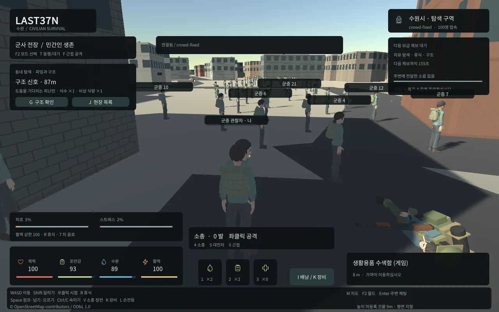

Tracefolio REPORTS & ISSUES
Tracefolio REPORTS & ISSUES반복 월드 전환의 지형 머티리얼 누적 수정
해결실제10분 반복에서 재질이450개 증가하던 문제를 색별 공유와 소유권 정리로 수정했습니다.
작업 결과
수정 후보의 전체10분 재시험과 기본 게임 적용을 마쳤습니다. 더 긴1시간 관찰은 별도 진행 중입니다.
변경 내용
재현 조건
Unity6000.0.83f1 WebGL·Edge156·Windows·Node24·PostgreSQL17/PostGIS
재현 순서
99개 WS 피어가 고정 월드에 접속한 상태에서 실제 Unity 브라우저1개로3개 월드를 반복 전환합니다. 월드별 최초2회는 이동하고 매3회 반복마다 연결을 끊어 복구합니다.10분/99회 전환 후 초기 워밍업 이후 같은 월드의 Material/Mesh 수와 Unity 추적 할당을 비교합니다.
기대 동작
동일 지형과 캐시가 반복 로드될 때 고유 재질과 메시 수가 워밍업 후 유지됩니다.
실제 동작
최초619119ms/99전환/100표본에서 crowd 재질843→1293(+450),메시1295→1295였습니다. 모든 캐시가 안정적이라고 판단하지 않고 전체 시험을 실패로 보존했습니다.
원인
GeographicWorld.Load가 지형 영역마다 Make(new Color(...))를 호출했고 Make가 매번 새 Material을 만들었습니다. 해당 청크 수역5개와 반복당 증가량이 일치했습니다. 지형 GameObject 파괴만으로 생성한 공유 Material의 소유권이 정리되지 않았습니다.
적용 내용
동일 Color의 지형 재질을 GeographicWorld 인스턴스에서 공유합니다. CityScenery.OnDestroy에서 소유한 지형/벽/폰트/화재/연기 재질과 Font 구독을 정리합니다. 기존 공유 캐릭터 캐시는 별도 유지합니다.

검증
실제 Unity1002호출/두색에서 재질2개만 생성되는 검사를 통과했습니다. 수정 후609519ms/99전환/11재접속 전체 시험은 crowd재질795→795/메시1291→1291,다른월드재질794→795·할당증가최대1140329bytes·카메라1·최대115캐릭터·오류0으로 통과했습니다. 기본8788에 같은 패키지를 적용했습니다. 근거 docs/qa/lightweight/runtime-soak/result.json(실패),runtime-soak-fixed/result.json(재검증),geographic-materials.json,final-live/execution.json. 캡처는 실제 게임 장면이며 계수 검증은 JSON 근거입니다.
남은 사항
추가1시간 반복 관찰은 아직 진행 중입니다. 총 브라우저/GPU 메모리와 모바일 성능을 이 결과로 대체하지 않습니다.
작업 시간
- 제안 시간: 사용자가 지정한6시간 작업 예산에 포함. 시작2026-10-31 05:16:01 KST·예산종료11:16:01 KST.
- 실제로 완료된 시간: 해당 수정의 검증 기록 시각 2026-10-31 09:10:41 KST,전체6시간 작업 시작 후234분41초. 전체 목표는 계속 진행 중입니다.
- XERJ: 미사용 — XERJ 도구 미제공 확인 후 rg·현재 소스·실제 실패/대조/재실행으로 검증했습니다.